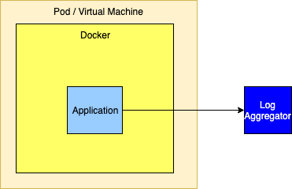

Using Log4j in Cloud Enabled Applications
The Twelve-Factor Application
The Logging Guidelines for The Twelve-Factor App state that all logs should be routed unbuffered to stdout. Since this is the least common denominator it is guaranteed to work for all applications. However, as with any set of general guidelines, choosing the least common denominator approach comes at a cost. Some of the costs in Java applications include:
-
Java stack traces are multi-line log messages. The standard docker log driver cannot handle these properly. See Docker Issue #22920 which was closed with the message "Don’t Care". Solutions for this are to:
-
Use a docker log driver that does support multi-line log message,
-
Use a logging format that does not produce multi-line messages,
-
Log from Log4j directly to a logging forwarder or aggregator and bypass the docker logging driver.
-
-
When logging to stdout in Docker, log events pass through Java’s standard output handling which is then directed to the operating system so that the output can be piped into a file. The overhead of all this is measurably slower than just writing directly to a file as can be seen in these benchmark results where logging to stdout is 16-20 times slower over repeated runs than logging directly to the file. The results below were obtained by running the Output Benchmark on a 2018 MacBook Pro with a 2.9GHz Intel Core i9 processor and a 1TB SSD. However, these results alone would not be enough to argue against writing to the standard output stream as they only amount to about 14-25 microseconds per logging call vs 1.5 microseconds when writing to the file.
Benchmark Mode Cnt Score Error Units OutputBenchmark.console thrpt 20 39291.885 ± 3370.066 ops/s OutputBenchmark.file thrpt 20 654584.309 ± 59399.092 ops/s OutputBenchmark.redirect thrpt 20 70284.576 ± 7452.167 ops/s -
When performing audit logging using a framework such as log4j-audit guaranteed delivery of the audit events is required. Many of the options for writing the output, including writing to the standard output stream, do not guarantee delivery. In these cases the event must be delivered to a "forwarder" that acknowledges receipt only when it has placed the event in durable storage, such as what Apache Flume will do.
Logging Approaches
All the solutions discussed on this page are predicated with the idea that log files cannot permanently reside on the file system and that all log events should be routed to one or more log analysis tools that will be used for reporting and alerting. There are many ways to forward and collect events to be sent to the log analysis tools.
Note that any approach that bypasses Docker’s logging drivers requires Log4j’s Docker Lookup to allow Docker attributes to be injected into the log events.
Logging to the Standard Output Stream
As discussed above, this is the recommended 12-Factor approach for applications running in a docker container. The Log4j team does not recommend this approach for performance reasons.

Logging to the Standard Output Stream with the Docker Fluentd Logging Driver
Docker provides alternate logging drivers, such as fluentd, that can be used to redirect the standard output stream to a log forwarder or log aggregator.
When routing to a log forwarder it is expected that the forwarder will have the same lifetime as the application. If the forwarder should fail the management tools would be expected to also terminate other containers dependent on the forwarder.

As an alternative the logging drivers could be configured to route events directly to a logging aggregator. This is generally not a good idea as the logging drivers only allow a single host and port to be configured. The docker documentation isn’t clear but infers that log events will be dropped when log events cannot be delivered so this method should not be used if a highly available solution is required.

Logging to a File
While this is not the recommended 12-Factor approach, it performs very well. However, it requires that the application declares a volume where the log files will reside and then configures the log forwarder to tail those files. Care must also be taken to automatically manage the disk space used for the logs, which Log4j can perform via the "Delete" action on the RollingFileAppender.

Sending Directly to a Log Forwarder via TCP
Sending logs directly to a Log Forwarder is simple as it generally just requires that the forwarder’s host and port be configured on a SocketAppender with an appropriate layout.

Sending Directly to a Log Aggregator via TCP
Similar to sending logs to a forwarder, logs can also be sent to a cluster of aggregators. However, setting this up is not as simple since, to be highly available, a cluster of aggregators must be used. However, the SocketAppender currently can only be configured with a single host and port. To allow for failover if the primary aggregator fails the SocketAppender must be enclosed in a FailoverAppender, which would also have the secondary aggregator configured. Another option is to have the SocketAppender point to a highly available proxy that can forward to the Log Aggregator.
If the log aggregator used is Apache Flume (or similar) the Appenders for these support being configured with a list of hosts and ports so high availability is not an issue.

Logging using Elasticsearch, Logstash, and Kibana
There are various approaches with different trade-offs for ingesting logs into an ELK stack. Here we will briefly cover how one can forward Log4j generated events first to Logstash and then to Elasticsearch.
Log4j Configuration
JsonTemplateLayout
Log4j provides a multitude of JSON generating layouts. In particular, JSON Template Layout allows full schema customization and bundles ELK-specific layouts by default, which makes it a great fit for the bill. Using the EcsLayout template as shown below will generate data in Kibana where the message displayed exactly matches the message passed to Log4j and most of the event attributes, including any exceptions, are present as individual attributes that can be displayed. Note, however that stack traces will be formatted without newlines.
<Socket name="Logstash"
host="${sys:logstash.host}"
port="12345"
protocol="tcp"
bufferedIo="true">
<JsonTemplateLayout eventTemplateUri="classpath:EcsLayout.json">
<EventTemplateAdditionalField key="containerId" value="${docker:containerId:-}"/>
<EventTemplateAdditionalField key="application" value="${lower:${spring:spring.application.name:-spring}}"/>
<EventTemplateAdditionalField key="kubernetes.serviceAccountName" value="${k8s:accountName:-}"/>
<EventTemplateAdditionalField key="kubernetes.containerId" value="${k8s:containerId:-}"/>
<EventTemplateAdditionalField key="kubernetes.containerName" value="${k8s:containerName:-}"/>
<EventTemplateAdditionalField key="kubernetes.host" value="${k8s:host:-}"/>
<EventTemplateAdditionalField key="kubernetes.labels.app" value="${k8s:labels.app:-}"/>
<EventTemplateAdditionalField key="kubernetes.labels.pod-template-hash" value="${k8s:labels.podTemplateHash:-}"/>
<EventTemplateAdditionalField key="kubernetes.master_url" value="${k8s:masterUrl:-}"/>
<EventTemplateAdditionalField key="kubernetes.namespaceId" value="${k8s:namespaceId:-}"/>
<EventTemplateAdditionalField key="kubernetes.namespaceName" value="${k8s:namespaceName:-}"/>
<EventTemplateAdditionalField key="kubernetes.podID" value="${k8s:podId:-}"/>
<EventTemplateAdditionalField key="kubernetes.podIP" value="${k8s:podIp:-}"/>
<EventTemplateAdditionalField key="kubernetes.podName" value="${k8s:podName:-}"/>
<EventTemplateAdditionalField key="kubernetes.imageId" value="${k8s:imageId:-}"/>
<EventTemplateAdditionalField key="kubernetes.imageName" value="${k8s:imageName:-}"/>
</JsonTemplateLayout>
</Socket>Gelf Template
The JsonTemplateLayout can also be used to generate JSON that matches the GELF specification which can format the message attribute using a pattern in accordance with the PatternLayout. For example, the following template, named EnhancedGelf.json, can be used to generate GELF-compliant data that can be passed to Logstash. With this template the message attribute will include the thread id, level, specific ThreadContext attributes, the class name, method name, and line number as well as the message. If an exception is included it will also be included with newlines. This format follows very closely what you would see in a typical log file on disk using the PatternLayout but has the additional advantage of including the attributes as separate fields that can be queried.
{
"version": "1.1",
"host": "${hostName}",
"short_message": {
"$resolver": "message",
"stringified": true
},
"full_message": {
"$resolver": "message",
"pattern": "[%t] %-5p %X{requestId, sessionId, loginId, userId, ipAddress, corpAcctNumber} %C{1.}.%M:%L - %m",
"stringified": true
},
"timestamp": {
"$resolver": "timestamp",
"epoch": {
"unit": "secs"
}
},
"level": {
"$resolver": "level",
"field": "severity",
"severity": {
"field": "code"
}
},
"_logger": {
"$resolver": "logger",
"field": "name"
},
"_thread": {
"$resolver": "thread",
"field": "name"
},
"_mdc": {
"$resolver": "mdc",
"flatten": {
"prefix": "_"
},
"stringified": true
}
}The logging configuration to use this template would be
<Socket name="Elastic"
host="\${sys:logstash.search.host}"
port="12222"
protocol="tcp"
bufferedIo="true">
<JsonTemplateLayout eventTemplateUri="classpath:EnhancedGelf.json" nullEventDelimiterEnabled="true">
<EventTemplateAdditionalField key="containerId" value="${docker:containerId:-}"/>
<EventTemplateAdditionalField key="application" value="${lower:${spring:spring.application.name:-spring}}"/>
<EventTemplateAdditionalField key="kubernetes.serviceAccountName" value="${k8s:accountName:-}"/>
<EventTemplateAdditionalField key="kubernetes.containerId" value="${k8s:containerId:-}"/>
<EventTemplateAdditionalField key="kubernetes.containerName" value="${k8s:containerName:-}"/>
<EventTemplateAdditionalField key="kubernetes.host" value="${k8s:host:-}"/>
<EventTemplateAdditionalField key="kubernetes.labels.app" value="${k8s:labels.app:-}"/>
<EventTemplateAdditionalField key="kubernetes.labels.pod-template-hash" value="${k8s:labels.podTemplateHash:-}"/>
<EventTemplateAdditionalField key="kubernetes.master_url" value="${k8s:masterUrl:-}"/>
<EventTemplateAdditionalField key="kubernetes.namespaceId" value="${k8s:namespaceId:-}"/>
<EventTemplateAdditionalField key="kubernetes.namespaceName" value="${k8s:namespaceName:-}"/>
<EventTemplateAdditionalField key="kubernetes.podID" value="${k8s:podId:-}"/>
<EventTemplateAdditionalField key="kubernetes.podIP" value="${k8s:podIp:-}"/>
<EventTemplateAdditionalField key="kubernetes.podName" value="${k8s:podName:-}"/>
<EventTemplateAdditionalField key="kubernetes.imageId" value="${k8s:imageId:-}"/>
<EventTemplateAdditionalField key="kubernetes.imageName" value="${k8s:imageName:-}"/>
</JsonTemplateLayout>
</Socket>The significant difference with this configuration from the first example is that it references the custom template and it specifies an event delimiter of a null character ('\0');
| The level being passed with the above template does not strictly conform to the GELF spec as the Level being passed is the Log4j Level NOT the Level defined in the GELF spec. However, testing has shown that Logstash, Elk, and Kibana are pretty tolerant of whatever data is passed to it. |
Custom Template
Another option is to use a custom template, possibly based on one of the standard templates. The template below is loosely based on ECS but a) adds the spring boot application name, b) formats the message using PatternLayout, formats Map Messages as event.data attributes while setting the event action based on any Marker included in the event, includes all the ThreadContext attributes.
| The Json Template Layout escapes control sequences so messages that contain '\n' will have those control sequences copied as "\n" into the text rather than converted to a newline character. This bypasses many problems that occur with Log Forwarders such as Filebeat and FluentBit/Fluentd. Kibana will correctly interpret these sequences as newlines and display them correctly. Also note that the message pattern does not contain a timestamp. Kibana will display the timestamp field in its own column so placing it in the message would be redundant. |
{
"@timestamp": {
"$resolver": "timestamp",
"pattern": {
"format": "yyyy-MM-dd'T'HH:mm:ss.SSS'Z'",
"timeZone": "UTC"
}
},
"ecs.version": "1.11.0",
"log.level": {
"$resolver": "level",
"field": "name"
},
"application": "\\${lower:\\${spring:spring.application.name}}",
"short_message": {
"$resolver": "message",
"stringified": true
},
"message": {
"$resolver": "pattern",
"pattern": "[%t] %X{requestId, sessionId, loginId, userId, ipAddress, accountNumber} %C{1.}.%M:%L - %m%n"
},
"process.thread.name": {
"$resolver": "thread",
"field": "name"
},
"log.logger": {
"$resolver": "logger",
"field": "name"
},
"event.action": {
"$resolver": "marker",
"field": "name"
},
"event.data": {
"$resolver": "map",
"stringified": true
},
"labels": {
"$resolver": "mdc",
"flatten": true,
"stringified": true
},
"tags": {
"$resolver": "ndc"
},
"error.type": {
"$resolver": "exception",
"field": "className"
},
"error.message": {
"$resolver": "exception",
"field": "message"
},
"error.stack_trace": {
"$resolver": "exception",
"field": "stackTrace",
"stackTrace": {
"stringified": true
}
}
}Finally, the GelfLayout can be used to generate GELF compliant output. Unlike the JsonTemplateLayout it adheres closely to the GELF spec.
<Socket name="Elastic" host="${sys:elastic.search.host}" port="12222" protocol="tcp" bufferedIo="true">
<GelfLayout includeStackTrace="true" host="${hostName}" includeThreadContext="true" includeNullDelimiter="true"
compressionType="OFF">
<ThreadContextIncludes>requestId,sessionId,loginId,userId,ipAddress,callingHost</ThreadContextIncludes>
<MessagePattern>%d [%t] %-5p %X{requestId, sessionId, loginId, userId, ipAddress} %C{1.}.%M:%L - %m%n</MessagePattern>
<KeyValuePair key="containerId" value="${docker:containerId:-}"/>
<KeyValuePair key="application" value="${lower:${spring:spring.application.name:-spring}}"/>
<KeyValuePair key="kubernetes.serviceAccountName" value="${k8s:accountName:-}"/>
<KeyValuePair key="kubernetes.containerId" value="${k8s:containerId:-}"/>
<KeyValuePair key="kubernetes.containerName" value="${k8s:containerName:-}"/>
<KeyValuePair key="kubernetes.host" value="${k8s:host:-}"/>
<KeyValuePair key="kubernetes.labels.app" value="${k8s:labels.app:-}"/>
<KeyValuePair key="kubernetes.labels.pod-template-hash" value="${k8s:labels.podTemplateHash:-}"/>
<KeyValuePair key="kubernetes.master_url" value="${k8s:masterUrl:-}"/>
<KeyValuePair key="kubernetes.namespaceId" value="${k8s:namespaceId:-}"/>
<KeyValuePair key="kubernetes.namespaceName" value="${k8s:namespaceName:-}"/>
<KeyValuePair key="kubernetes.podID" value="${k8s:podId:-}"/>
<KeyValuePair key="kubernetes.podIP" value="${k8s:podIp:-}"/>
<KeyValuePair key="kubernetes.podName" value="${k8s:podName:-}"/>
<KeyValuePair key="kubernetes.imageId" value="${k8s:imageId:-}"/>
<KeyValuePair key="kubernetes.imageName" value="${k8s:imageName:-}"/>
</GelfLayout>
</Socket>Logstash Configuration with Gelf
We will configure Logstash to listen on TCP port 12345 for payloads of type JSON and then forward these to (either console and/or) an Elasticsearch server.
input {
tcp {
port => 12345
codec => "json"
}
}
output {
# Uncomment for debugging purposes.
# stdout { codec => rubydebug }
# Modify the hosts value to reflect where Elasticsearch is installed.
elasticsearch {
hosts => ["http://localhost:9200/"]
index => "app-%{application}-%{+YYYY.MM.dd}"
}
}Logstash Configuration with JsonTemplateLayout
When using one of the GELF compliant formats, Logstash should be configured as:
gelf {
host => "localhost"
use_tcp => true
use_udp => false
port => 12222
type => "gelf"
}
}
filter {
translate {
field => "[level]"
destination => "[levelName]"
dictionary => {
"0" => "EMERG"
"1" => "ALERT"
"2" => "CRITICAL"
"3" => "ERROR"
"4" => "WARN"
"5" => "NOTICE"
"6" => "INFO"
"7" => "DEBUG"
}
}
}
output {
elasticsearch {
hosts => ["http://localhost:9200/"]
index => "app-%{application}-%{+YYYY.MM.dd}"
}
}Kibana
Using the EnhancedGelf template or the custom template, the above configurations will allow the message field to contain a fully formatted log event. The ThreadContext attributes, custom fields, thread name, etc., will all be available as attributes on each log event that can be used for filtering.
Managing Logging Configuration
Spring Boot provides another least common denominator approach to logging configuration. It will let you set the log level for various Loggers within an application which can be dynamically updated via REST endpoints provided by Spring. While this works in a lot of cases it does not support any of the more advanced filtering features of Log4j. For example, since it cannot add or modify any Filters other than the log level of a logger, changes cannot be made to allow all log events for a specific user or customer to temporarily be logged (see DynamicThresholdFilter or ThreadContextMapFilter) or any other kinds of changes to filters. Also, in a microservices, clustered environment it is quite likely that these changes will need to be propagated to multiple servers at the same time. Trying to achieve this via REST calls could be difficult.
Since its first release Log4j has supported reconfiguration through a file. Beginning with Log4j 2.12.0 Log4j also supports accessing the configuration via HTTP(S) and monitoring the file for changes by using the HTTP "If-Modified-Since" header. A patch has also been integrated into Spring Cloud Config starting with versions 2.0.3 and 2.1.1 for it to honor the If-Modified-Since header. In addition, the log4j-spring-cloud-config project will listen for update events published by Spring Cloud Bus and then verify that the configuration file has been modified, so polling via HTTP is not required.
Log4j also supports composite configurations. A distributed application spread across microservices could share a common configuration file that could be used to control things like enabling debug logging for a specific user.
While the standard Spring Boot REST endpoints to update logging will still work any changes made by those REST endpoints will be lost if Log4j reconfigures itself do to changes in the logging configuration file.
Further information regarding integration of the log4j-spring-cloud-config-client can be found at Log4j Spring Cloud Config Client.
Integration with Spring Boot
Log4j integrates with Spring Boot in two ways:
-
A Spring Lookup can be used to access the Spring application configuration from Log4j configuration files.
-
Log4j will access the Spring configuration when trying to resolve Log4j system properties.
Both of these require that the log4j-spring-cloud-client jar is included in the application.
Integration with Docker
Applications within a Docker container that log using a Docker logging driver can include special attributes in the formatted log event as described at Customize Log Driver Output. Log4j provides similar functionality via the Docker Lookup. More information on Log4j’s Docker support may also be found at Log4j Docker.
Integration with Kubernetes
Applications managed by Kubernetes can bypass the Docker/Kubernetes logging infrastructure and log directly to either a sidecar forwarder or a logging aggragator cluster while still including all the Kubernetes attributes by using the Kubernetes Log4j Lookup maintained by the Fabric8 project.
Appender Performance
The numbers in the table below represent how much time in seconds was required for the application to call logger.debug(...) 100,000 times.
These numbers only include the time taken to deliver to the specifically noted endpoint and many not include the actual time required before they are available for viewing.
All measurements were performed on a MacBook Pro with a 2.9GHz Intel Core I9 processor with 6 physical and 12 logical cores, 32GB of 2400 MHz DDR4 RAM, and 1TB of Apple SSD storage.
The VM used by Docker was managed by VMWare Fusion and had 4 CPUs and 2 GB of RAM.
These number should be used for relative performance comparisons as the results on another system may vary considerably.
The sample application used can be found under the in the Log4j samples source repository.
| Test | 1 Thread | 2 Threads | 4 Threads | 8 Threads |
|---|---|---|---|---|
Flume Avro |
||||
- Batch Size 1 - JSON |
49.11 |
46.54 |
46.70 |
44.92 |
- Batch Size 1 - RFC5424 |
48.30 |
45.79 |
46.31 |
45.50 |
- Batch Size 100 - JSON |
6.33 |
3.87 |
3.57 |
3.84 |
- Batch Size 100 - RFC5424 |
6.08 |
3.69 |
3.22 |
3.11 |
- Batch Size 1000 - JSON |
4.83 |
3.20 |
3.02 |
2.11 |
- Batch Size 1000 - RFC5424 |
4.70 |
2.40 |
2.37 |
2.37 |
Flume Embedded |
||||
- RFC5424 |
3.58 |
2.10 |
2.10 |
2.70 |
- JSON |
4.20 |
2.49 |
3.53 |
2.90 |
Kafka Local JSON |
||||
- sendSync true |
58.46 |
38.55 |
19.59 |
19.01 |
- sendSync false |
9.8 |
10.8 |
12.23 |
11.36 |
Console |
||||
- JSON / Kubernetes |
3.03 |
3.11 |
3.04 |
2.51 |
- JSON |
2.80 |
2.74 |
2.54 |
2.35 |
- Docker fluentd driver |
10.65 |
9.92 |
10.42 |
10.27 |
Rolling File |
||||
- RFC5424 |
1.65 |
0.94 |
1.22 |
1.55 |
- JSON |
1.90 |
0.95 |
1.57 |
1.94 |
TCP - Fluent Bit - JSON |
2.34 |
2.167 |
1.67 |
2.50 |
Async Logger |
||||
- TCP - Fluent Bit - JSON |
0.90 |
0.58 |
0.36 |
0.48 |
- Console - JSON |
0.83 |
0.57 |
0.55 |
0.61 |
- Flume Avro - 1000 - JSON |
0.76 |
0.37 |
0.45 |
0.68 |
Notes:
-
Flume Avro - Buffering is controlled by the batch size. Each send is complete when the remote acknowledges the batch was written to its channel. These number seem to indicate Flume Avro could benefit from using a pool of RPCClients, at least for a batchSize of 1.
-
Flume Embedded - This is essentially asynchronous as it writes to an in-memory buffer. It is unclear why the performance isn’t closer to the AsyncLogger results.
-
Kafka was run in standalone mode on the same laptop as the application. See sendSync set to true requires waiting for an ack from Kafka for each log event.
-
Console - System.out is redirected to a file by Docker. Testing shows that it would be much slower if it was writing to the terminal screen.
-
Rolling File - Test uses the default buffer size of 8K.
-
TCP to Fluent Bit - The Socket Appender uses a default buffer size of 8K.
-
Async Loggers - These all write to a circular buffer and return to the application. The actual I/O will take place on a separate thread. If writing the events is performed more slowly than events are being created eventually the buffer will fill up and logging will be performed at the same pace that log events are written.
Logging Recommendations
-
Use asynchronous logging unless guaranteed delivery is absolutely required. As the performance numbers show, so long as the volume of logging is not high enough to fill up the circular buffer the overhead of logging will almost be unnoticeable to the application.
-
If overall performance is a consideration or you require multiline events such as stack traces be processed properly then log via TCP to a companion container that acts as a log forwarder or directly to a log aggregator as shown above in Logging with ELK. Use the Log4j Docker Lookup to add the container information to each log event.
-
Whenever guaranteed delivery is required use Flume Avro with a batch size of 1 or another Appender such as the Kafka Appender with syncSend set to true that only return control after the downstream agent acknowledges receipt of the event. Beware that using an Appender that writes each event individually should be kept to a minimum since it is much slower than sending buffered events.
-
Logging to files within the container is discouraged. Doing so requires that a volume be declared in the Docker configuration and that the file be tailed by a log forwarder. However, it performs better than logging to the standard output stream. If logging via TCP is not an option and proper multiline handling is required then consider this option.